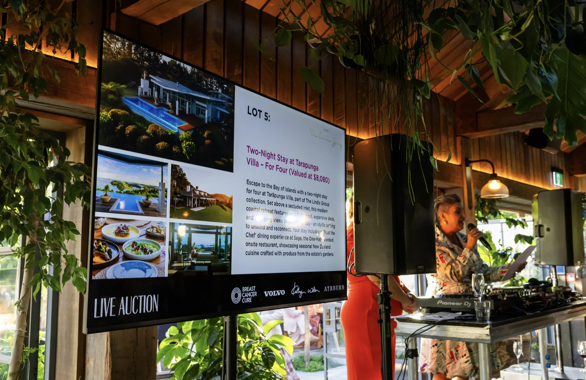

AV is a broad term and people use it to mean different things. For us, it covers anything that makes your event look and sound the way it should. Speakers. Mixing desks. Microphones. Moving heads. Wash lights. Hazers. Projectors. Screens. If it plugs in and makes your event better, we probably have it.
You might need a full production package for a festival, or you might just need a projector and a screen for a presentation. Either way, we can help. We hire individual items, put together custom packages, and provide operators when you need them.

Everything from a small PA for speeches to a line array for a festival main stage. We have speakers and subs, full PA systems with mixing desks and microphones, and DJ gear including CDJs and DJM mixers.
Moving heads, wash fixtures, strobes, blinders, lasers, UV, hazers, and atmospheric effects. Plus decorative lighting like festoon, fairy lights, and wireless uplights. Programmed shows or sound-reactive.
Projectors and screens for presentations and films. LED walls for larger shows. Plus marquees, staging, truss, and power distribution to round out your event production.
Having one company handle all your AV makes life simpler. One point of contact, one delivery, one crew who knows the whole setup. We've done this for Red Bull activations, Rhythm and Vines, Ensoc events, and plenty of private gigs around Christchurch. We're a small team and we know our gear inside out.
Browse our specific hire pages for more detail, or head to our services page for the full picture. Ready to book? Get in touch.

Tell us about your event and we'll put a package together.
Get in touch or call 021 178 0355.
AV covers audio, visual, and lighting. That means speakers, mixing desks, microphones, projectors, screens, LED walls, moving heads, wash lights, hazers, and everything else you need to make an event look and sound good. We can put together a package based on what you need.
Yes. You don't have to hire the full package. Need just a pair of speakers? A projector? A couple of moving heads? No problem. We hire individual items as well as full production setups.
Yes. If you have your own operator and just need the gear, we can do dry hire with delivery and pickup. For larger or more complex setups, we'd recommend having one of our crew on site to make sure everything runs smoothly.
All Ears Events Limited
20 Southwark Street, Christchurch
021 178 0355 · hello@allears.nz
Mon-Fri 9am-4pm